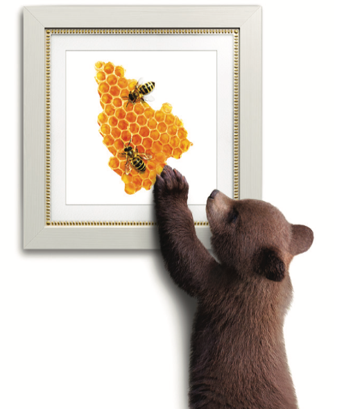
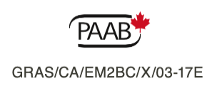

NOW COVERED IN BRITISH COLUMBIA
(special authorization)
|
|
Canada’s first
biosimilar of Neupogen
|
|
Canada’s first
biosimilar of Neupogen
|
|

|
Apobiologix ® is pleased to announce
that Grastofil® is now covered under the BC PharmaCare Limited Coverage Drug Program. For details on coverage criteria, visit www.gov.bc.ca
|
Apobiologix® supports your patients
Your Grastofil® patients are also supported through the ANSWERS patient support program, which:
- Offers comprehensive reimbursement assistance.
- Helps maximizes access and minimizes time
to treatment.
Enrol your patients in the ANSWERS patient support
program today! Visit apoanswers.ca.
|
|
Grastofil® is developed and marketed by
Apobiologix®,a Canadian pharmaceutical
company dedicated to biosimilars.
|
Grastofil® is developed and marketed by
Apobiologix®,a Canadian pharmaceutical
company dedicated to biosimilars.
|
Indications and clinical use:
Grastofil® (filgrastim) is indicated for the following:
Cancer Patients Receiving Myelosuppressive Chemotherapy
Grastofil® is indicated to decrease the incidence of infection, as manifested
by febrile neutropenia, in patients with non-myeloid malignancies receiving myelosuppressive
anti-neoplastic drugs.
Grastofil® is indicated in adult and pediatric patients with cancer receiving
myelosuppressive chemotherapy.
A complete blood count (CBC) and platelet count should be obtained prior to chemotherapy and
twice per week during Grastofil® therapy to avoid leukocytosis and to monitor
the neutrophil count. In phase 3 clinical studies, filgrastim therapy was discontinued when
the ANC was > 10 x 109/L after expected chemotherapy-induced nadir.
Please consult the complete Product Monograph at
https:// health-products.canada.ca/dpd-bdpp/index-eng.jsp
for complete indications, contraindications, warnings, precautions,
adverse reactions, interactions, dosing and conditions of clinical use. The Product
Monograph is also available by calling DISpedia, Apotex's Drug Information Service, at:
1-800-667-4708.
|
© 2017, Apotex Technologies Inc.
Apobiologix® and Grastofil® are trademarks
of Apotex Technologies Inc.
Neupogen is a trademark of Amgen Inc.
|

|

|
|
|
|
|
|
|
|
|